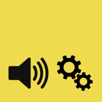

soundworks

Full-stack JavaScript framework for distributed WebAudio and multimedia applications.
Table of Contents
Documentation
https://collective-soundworks.github.io
API
http://collective-soundworks.github.io/soundworks/
Overview
soundworks follows a client / server architecture where the server is written using Node.js and clients can be either regular browser clients or Node.js clients running for example on a Raspberry Pi.

The core of the framework is very minimal and dedicated at handling:
- Http(s) server and basic routing
- WebSockets initialization
- Processes initialization
- Distributed state management
soundworks can be extended with plugins to reuse common logic such as audio file loading, clock synchronisation, etc. Each plugin leaves in a separate repo for better modularity and to simplify version management.
Installation
Note: most of the time you won't need to install soundworks manually, consider using the application template instead.
npm install @soundworks/core
Application Template
The simplest way to start a new soundworks application is using the application template:
https://github.com/collective-soundworks/soundworks-template.
Academic Papers
- Benjamin Matuszewski. Soundworks - A Framework for Networked Music Systems on the Web - State of Affairs and New Developments. Proceedings of the Web Audio Conference (WAC) 2019, Dec 2019, Trondheim, Norway. <hal-02387783>
- Benjamin Matuszewski, Norbert Schnell, Frédéric Bevilacqua. Interaction Topologies in Mobile-Based Situated Networked Music Systems. Wireless Communications and Mobile Computing, Hindawi Publishing Corporation, 2019, 2019, pp.9142490. ⟨10.1155/2019/9142490⟩. <hal-02086673>
- Norbert Schnell, Sébastien Robaszkiewicz. Soundworks – A playground for artists and developers to create collaborative mobile web performances. `Proceedings of the Web Audio Conference (WAC'15), 2015, Paris, France. <hal-01580797>
Credits
soundworks has been initiated by Norbert Schnell, Sébastien Robaszkiewicz, and Benjamin Matuszewski at the ISMM team at Ircam - Centre Pompidou in the framework of the CoSiMa research project supported by the French National Research Agency (ANR).
Futher developments has been supported in the framework of:
- The RAPID-MIX project, funded by the European Union’s Horizon 2020 research and innovation program
- The Ircam project BeCoMe
- The Constella(c)tions residency of the STARTS program of the European Commission.
Development is pursued, led by Benjamin Matuszewski, in the Interaction Music Movement Team from the Ircam's STMS-LAB.